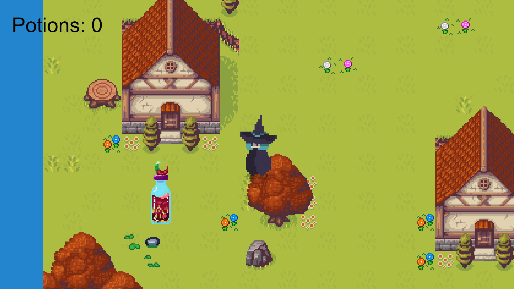

Project
BlueWitch
Een 2D avonturengame waarin een heks je helpt magische drankjes terug te vinden die verspreid zijn over de map.

Over dit project
Dit project is een 2D browsergame die ik heb gemaakt voor Programmeren 4. Het doel was om een speelbare game te bouwen met Excalibur.js, waarbij verschillende game-technieken samenkomen. Denk hierbij aan scenes, player movement, collision, assets, animaties en interactie met de speler. De game draait in de browser en wordt gestart via Vite.
Mijn rol
Voor dit project heb ik gewerkt aan het opzetten van de game, het toevoegen van visuele onderdelen en het uitwerken van de gameplay. Ik heb gebruikgemaakt van JavaScript en Excalibur.js om de game interactief te maken. Daarnaast heb ik gewerkt met assets, scenes en de structuur van het project, zodat de game stap voor stap speelbaar werd.
Wat heb ik geleerd?
Tijdens dit project heb ik beter leren werken met objectgeoriënteerd programmeren binnen een game. Ik heb geleerd hoe je een game opbouwt met classes, actors, scenes en collision detection. Ook heb ik gemerkt hoe belangrijk het is om overzicht te houden in je bestanden en om regelmatig te testen. Een volgende keer zou ik eerder beginnen met het afronden van de basisgame, zodat er meer tijd overblijft voor extra details en polish.